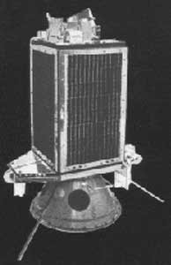
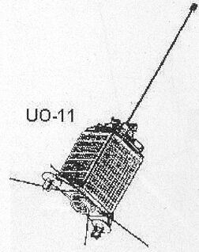

El UoSAT-2, que también se conoce como UO-11 y OSCAR-11, es un satélite británico amateur que orbita en la órbita terrestre baja o Orbita circular LEO (Low Earth Orbit) a unos 680 kilómetros de la Tierra. El satélite funciona como un transmisor de radio aficionado (conocido como OSCAR) y fue construido en la Universidad de Surrey. Se puso en órbita en marzo de 1984 y permanece orbital y activo, aunque inestable con períodos irregulares de transmisión ya que sus baterías se han agotado y sólo funciona en los periodos en que la luz solar llega a sus paneles. Todos los canales de telemetría analógica han fallado, debido al deterioro o avería de sus sensores, haciendo que la telemetría de OSCAR 11 sea inútil.

El satélite aún se escucha transmitiendo telemetría en 2018 cuando orbita en recepción de luz solar, más treinta años después de su lanzamiento.
El satélite fue el segundo en la serie de satélites UoSAT construidos por la Universidad de Surrey, precedido por el UoSAT-1 y seguido por el UoSAT-3.
El satélite lleva un sintetizador de voz Digitalker, magnetómetros, una cámara CCD, un tubo Geiger-Müller y un micrófono para detectar las vibraciones de los impactos de los micrometeoroides. Al igual que el UoSAT-1, transmite datos de telemetría en la baliza VHF a 1200 baudios, usando AFSK asíncrono, aunque ahora todos los canales de telemetría analógicos han fallado, en un receptor de FM, la señal de audio se asemeja al formato de datos de cassette del contemporáneo Ordenador micro de la BBC. En realidad es una señal de BASICODE. También se había observado una ligera modulación en la baliza de la banda S.
Los paneles solares de UoSAT-2 se compraron a un precio superior en comparación con los de UoSAT-1, el diseño fue probado en el espacio por su antecesor.
Con el experimento de la cámara CCD, el satélite era capaz de enviar imagenes de la Tierra a una resolución de 384 x 256 pixels en una escala de 128 grises.
Uno de los experimentos más interesanes del OSCAR-11 es el DCE (Digital Communication Experiment) que consiste en una memoria capaz de almacenar transmisiones recibidas desde la Tierra y volver a enviarlas a otro punto de la Tierra. Estas transmisiones podían consistir en datos o en mensajes de voz reproducidos por el experimento Digitalker
Cabe recordar que este satélite era amateur y fue lanzado en el año 1984!

Nombre: UoSAT-2 Oscar-11
Lanzamiento: 1 de Marzo de 1986
Vehículo de lanzamiento: Thor Delta 3920
Lugar de lanzamiento: Vandenberg, California EUA
Peso: 60 Kg
Soporte
La filial británica de AMSAT distribuyó una biblioteca de software para la BBC Micro para rastrear el UoSAT-2 y otros satélites y analizar las transmisiones de telemetría. El receptor comercial de frecuencia fija, Astrid, también fue producido por la firma británica MM Microwave para el mercado educativo, con el software BBC Micro para mostrar los cuadros de telemetría sin procesar. Para mayor versatilidad, el conjunto Astrid incluyó un demodulador para cargar señales a través del puerto serie de cualquier computadora.
Según un informe de estado de febrero de 2008, el satélite no tenía respaldo de batería viable, operaba solo desde sus paneles solares, y un temporizador de vigilancia (watch-dog) a bordo suspendía la actividad por hasta tres semanas después de cualquier anomalía de energía. En el momento del informe, estaba experimentando luz solar continua por última vez: desde mediados de marzo de 2008, ha habido eclipses en su órbita que continuarán "de forma permanente", limitando las transmisiones a "poco tiempo, posiblemente menos [que] a Órbita única, cada 21 días ". Se espera que los eclipses continúen hasta 2019.
Después de un intervalo de 21 meses en las observaciones, el UoSAT-2 reanudó el envío de telemetría en algún momento antes del 10 de diciembre de 2009, y aparentemente continúa con el régimen de transmisión controlado por el watch-dog, aunque ahora tiene un calendario de diez días seguidos y diez días libres. Su condición no ha mejorado, aparte de cierta recuperación de la energía de la batería, permitiendo que las transmisiones continúen en cada eclipse.
El OSCAR-11 posee tres transpondedores destinados a transmitir la telemetria del satélite, las frecuencias de los transpondedores son las siguientes:
Frecuencia
Modulación
Uso
145.826 Mhz.
FM AFSK 1200bps ascii
Telemetría y experimento Digitalker
435.025 Mhz.
FM AFSK 1200bps - FM PSK 4800bps
Sensores digitales, cámara CCD, experimento de partículas, datos de ingeniería
2401.5 Mhz.
FM PSK
Experimento propagación de ondas en LHCP
El transmisor de 145.826 MHz transmite datos ASCII de codificación de cambio de frecuencia de audio de FM (AFSK) a 1200 bps. En los primeros años también transmitió un mensaje de voz del experimento digitalker.
El transmisor de 435.025 MHz la baliza transmitió datos de 1200 bps FM AFSK o 4800 bps PSK. Esta baliza se usó para enlazar información del Experimento de Lectura y Almacenamiento Digital (DSR), que incluye datos de imágenes CCD de la Tierra, resultados del Experimento de Ondas de Partículas y datos de ingeniería de la CPU RCA COSMAC 1802.
El transmisor de 2401.5 MHz transmite señales de FM y PSK. La polarización de la antena para los tres transmisores de baliza es circular izquierda (LHCP).
Sólo la baliza de 145.826 MHz continua en funcionamiento.
Escucha
Para escuchar las transmisiones del OSCAR-11 sólo es necesario un receptor VHF de la banda de 2 metros sintonizado en la frecuencia 145.826Mhz, que es la única que continua en funcionamiento.
También hay que tener en cuenta que sólo transmite en los momentos que recibe luz solar en sus paneles
En este video podemos ver como el radioaficionado IK8XLD recibe la señal del OSCAR-11 en un receptor multibanda Kenwood TS-2000.
El audio recibido puede ser procesado por un PC y el software adecuado interpretando la telemetría, aunque debido al fallo de sensores y equipos la telemetría no es correcta actualmente.
Curiosidades
Expedición al Ártico de Ski-Trek en 1988
El satélite fue fundamental para proporcionar un enlace de comunicaciones, conocido como Nordski Comm, en la expedición Ski-Trek realizada en 1988, desde los equipos de apoyo de Ski-Trek hasta el equipo de la expedición. La posición de la baliza de emergencia de los esquiadores fue calculada diariamente por las estaciones terrestres de Cospas-Sarsat y se les transmitió a ellos, y a miles de radioaficionados, como un mensaje hablado del Digitalker a bordo del UoSAT-2. El mensaje también podría servir como un canal de emergencia para los esquiadores en caso de que todos los demás enlaces de radio hubieran fallado.
Aquí podemos escuchar una grabación del Digitalker transmitiendo la última posición conocida de la expedición Ski-Track el 24 de Marzo de 1988 en la banda de VHF, grabada por Michael Meermann PA3BHF.
La grabación dice: NUMBER 18 - PRIORITY 0 0 0 - DATE 24TH OF MARCH - TIME 12 HOURS AND 52 MINUTES GMT - YOU ARE AT 84 DEGREES 25 POINT 6 MINUTES N AND 95 DEGREES 58.2 MINUTES E - 73S